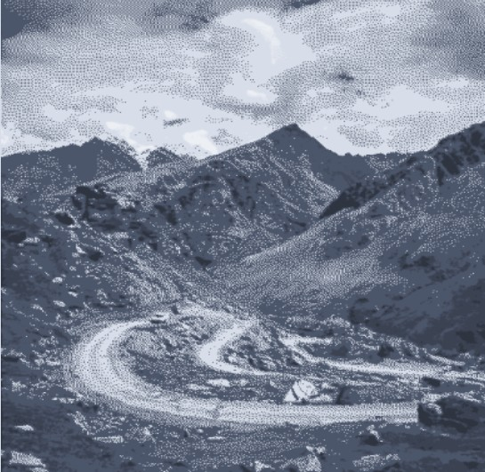
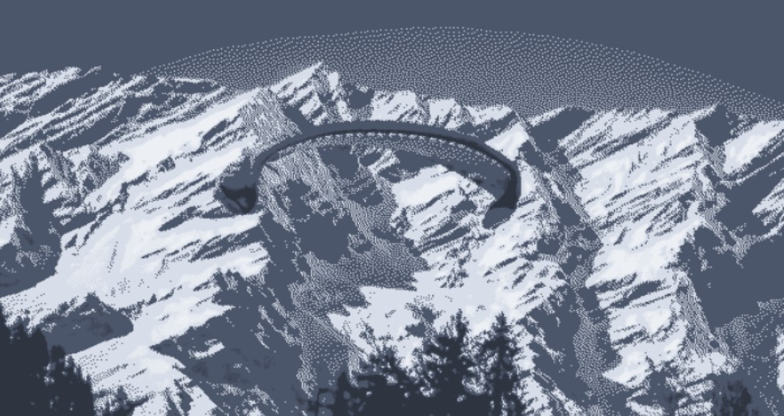
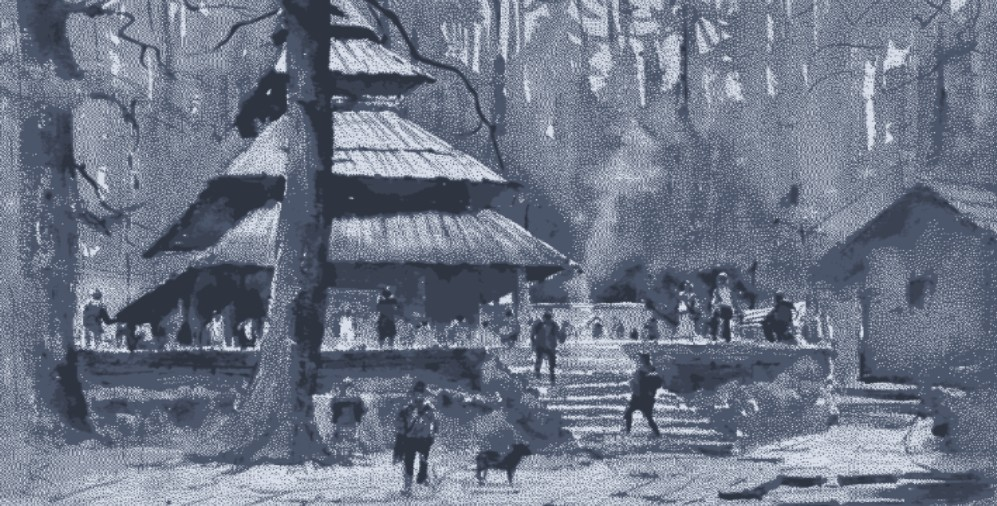
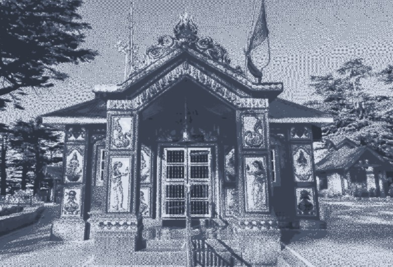

Himachal Pradesh: A Himalayan Paradise
Manali
Overview
Manali is a picturesque hill station nestled in the Kullu Valley of Himachal Pradesh, located at the foothills of the majestic Himalayas. It’s a perfect blend of natural beauty, adventure, and tranquility, making it one of the most popular tourist destinations in India.
Places to Explore
Rohtang Pass
Located at an altitude of 3,978 meters, Rohtang Pass is one of the most famous tourist spots in Manali. It’s a year-round destination for snow sports like skiing, snowboarding, and sledging. The pass offers breathtaking views of the surrounding mountains, glaciers, and valleys.
Solang Valley
Known for its adventure sports and stunning landscapes, Solang Valley is the go-to destination for thrill-seekers. Activities such as paragliding, zorbing, skiing (in winter), and trekking are popular here. The valley also offers beautiful views of the snow-covered peaks and lush greenery.
Hadimba Temple
Situated amidst a forest of deodar trees, Hadimba Temple is a unique and serene spot dedicated to the goddess Hadimba from Hindu mythology. The temple’s distinctive architecture and peaceful setting make it a must-visit spot for both pilgrims and tourists.
What to Expect?
Manali offers awe-inspiring views of snow-covered peaks, lush valleys, and dense forests.
rom skiing and snowboarding in Rohtang Pass to paragliding in Solang Valley, Manali is an adventure lover’s paradise
Shimla
Overview
Shimla, the capital city of Himachal Pradesh, is a timeless hill station that has captured the hearts of travelers for decades. Often referred to as the "Queen of Hill Stations," Shimla boasts colonial-era architecture, lush greenery, and panoramic views of the Himalayas.
Places to Explore
The Ridge
The heart of Shimla, The Ridge, is a large open space offering panoramic views of the surrounding mountains. It is a popular spot for photography, and catching beautiful sunsets. The Ridge is also where the famous Christ Church and Jakhoo Temple are located.
Jakhoo Temple
Perched atop Jakhoo Hill, Jakhoo Temple is dedicated to Lord Hanuman and offers stunning views of Shimla and the surrounding valleys.
What to Expect?
Shimla offers a delightful blend of natural beauty, adventure, history, and culture. Whether you're looking for a romantic getaway, an adventurous retreat, or a peaceful escape, this charming hill station has something for everyone!